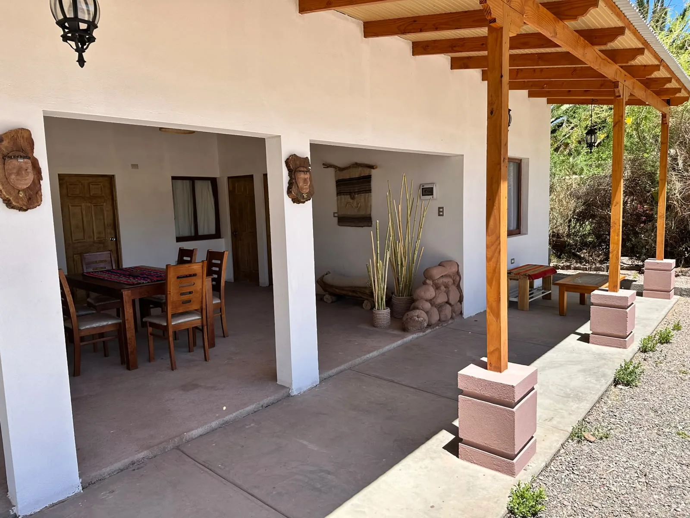
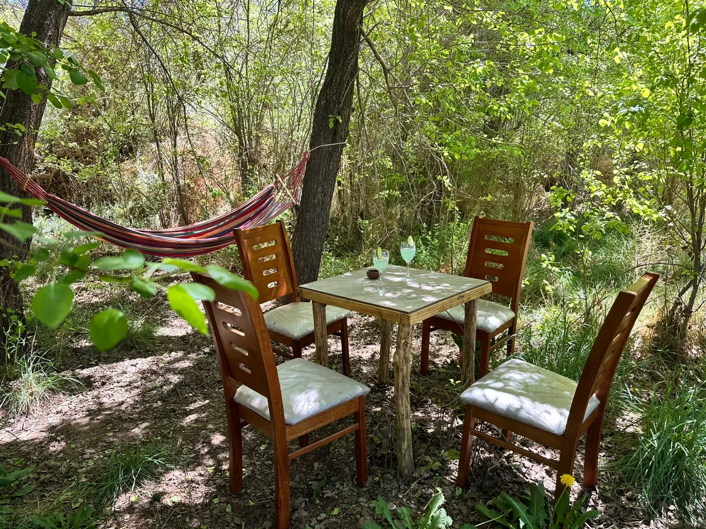
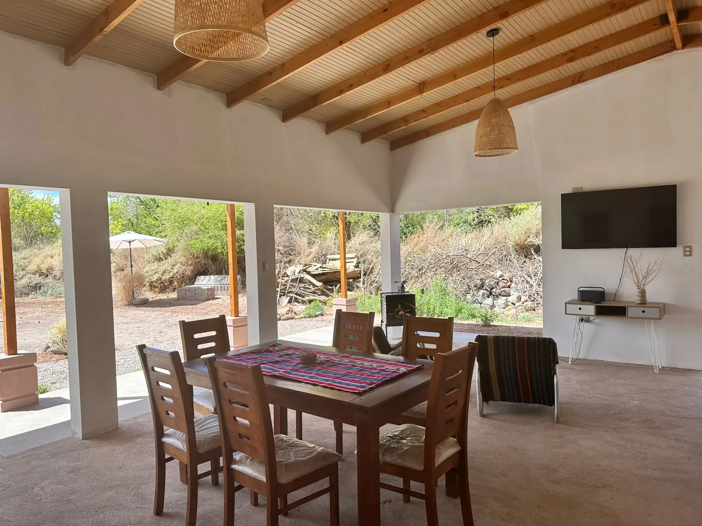
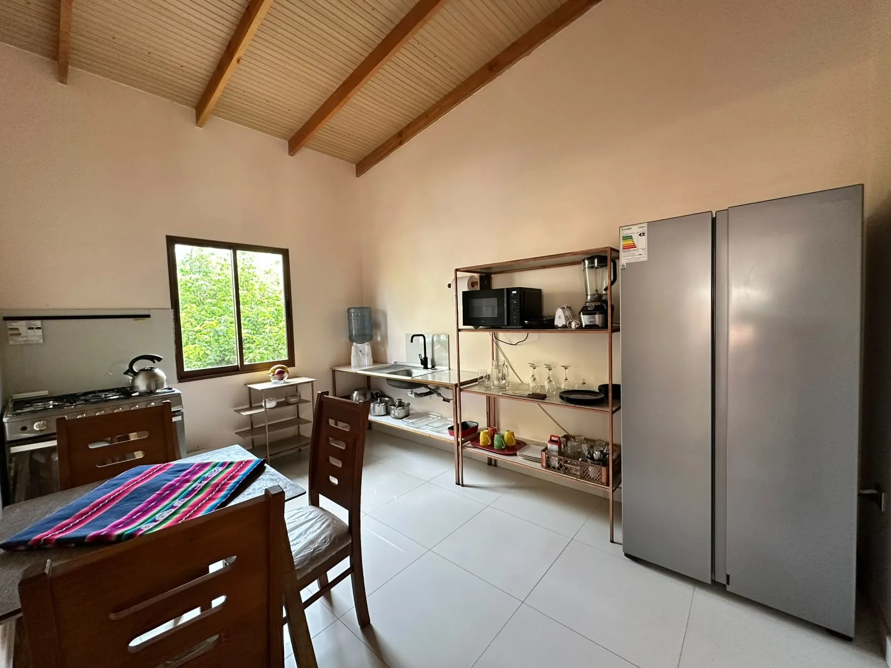
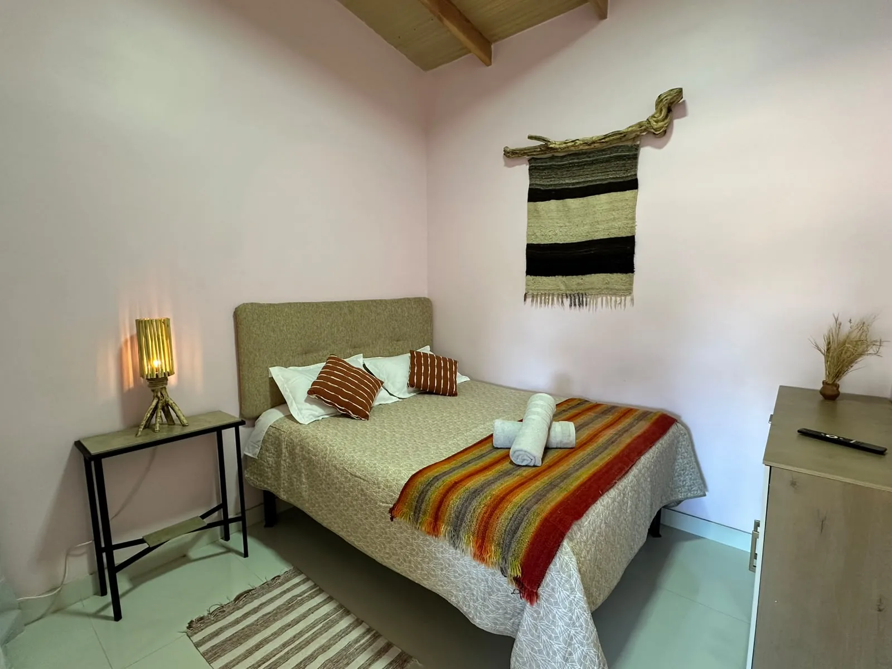
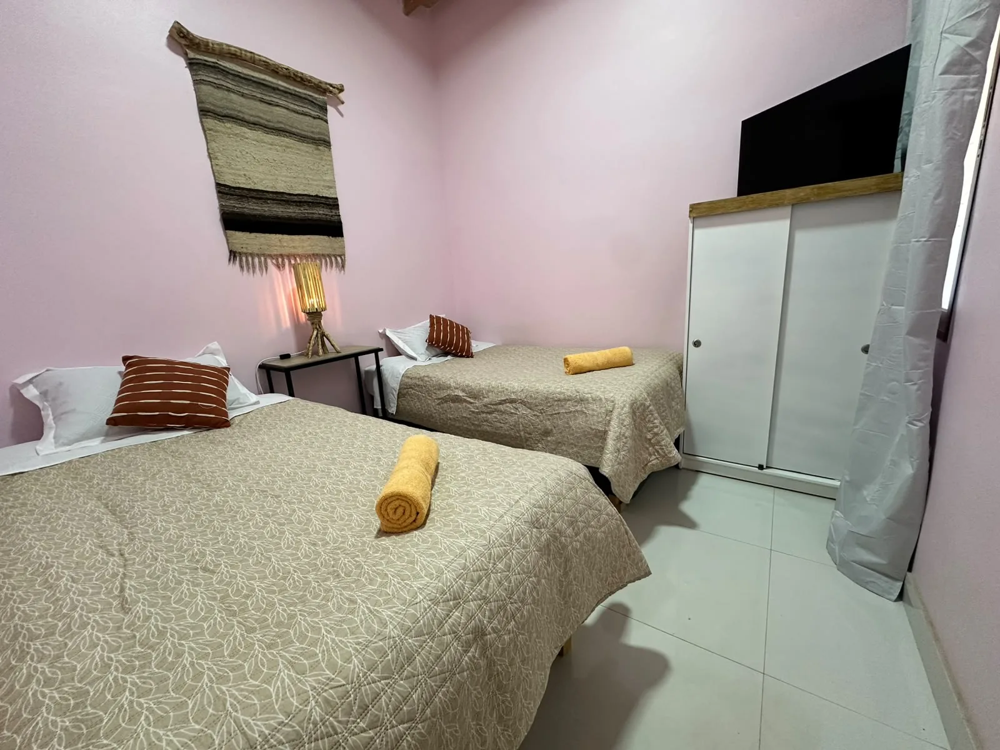
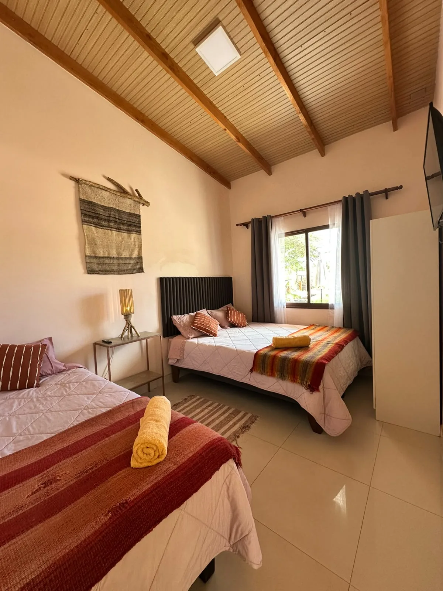
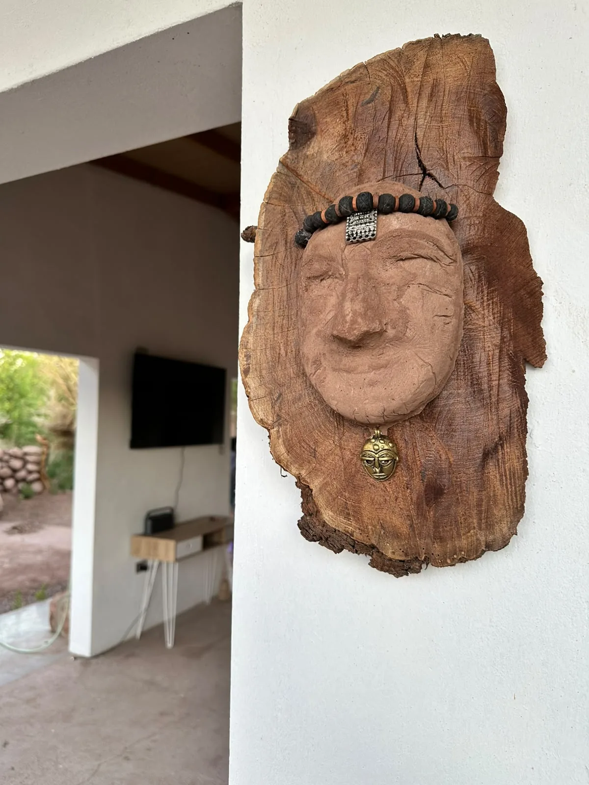

01 / AL AIRE LIBRE
La terraza, el punto de encuentro
Un espacio amplio y protegido para compartir durante el día y disfrutar el aire de Atacama al anochecer.
UN RINCÓN PARA QUEDARSE
Tu casa de descanso en San Pedro de Atacama. Espacio para compartir, tiempo para desconectar y el oasis justo afuera.
BIENVENIDOS A HOUS PARADISE
Hay lugares que invitan a quedarse un poco más. Aquí las mañanas comienzan entre árboles, las tardes se alargan en la terraza y cada persona encuentra su propio espacio para descansar.
Hous Paradise reúne tres dormitorios, cocina equipada, un amplio espacio para compartir y áreas verdes en el sector de Sequitor, a unos minutos en vehículo del centro de San Pedro.
Conoce los espacios
CADA RINCÓN TIENE SU MOMENTO
Desde una comida sin apuro hasta una siesta bajo los árboles: explora lo que hace especial una estadía aquí.

Un espacio amplio y protegido para compartir durante el día y disfrutar el aire de Atacama al anochecer.

Comedor y zona de estar para conversaciones largas y planes espontáneos.

Equipada para preparar desde el desayuno hasta una cena tranquila.
DESCANSO A TU MEDIDA
Una distribución cómoda para familias o grupos que quieren compartir una casa completa y mantener su propio espacio.

Un espacio sereno para descansar después de recorrer San Pedro.

Dos camas y la comodidad de tener cada uno su lugar.

Una opción flexible para viajar en familia o con amigos.

EL DETALLE QUE NOS REPRESENTA
En la entrada, un retrato artesanal tallado sobre madera recibe a quienes llegan. Su expresión tranquila inspiró el símbolo de Hous Paradise: una pequeña señal de la calidez que se vive aquí.
Mira la galeríaUNA MIRADA A LA CASA
Fotografías reales de los espacios donde puedes descansar, reunirte y disfrutar el jardín.
SAN PEDRO DE ATACAMA
Estamos en Av. Sequitor 47 A, en San Pedro de Atacama. Un punto de partida para descubrir el destino y volver a la tranquilidad de la casa.
ANTES DE VIAJAR
Para fechas, tarifas y detalles de tu estadía, Hugo te responderá directamente por WhatsApp.
Elige tus fechas y la cantidad de huéspedes en el formulario. Se abrirá WhatsApp con el mensaje listo para enviar a Hugo.
Sí. La casa cuenta con cocina equipada para preparar tus comidas durante la estadía.
En Avenida Sequitor 47 A, San Pedro de Atacama, a unos minutos en vehículo del centro.
Sí. Indica cuántas personas viajan y sus fechas para que Hugo confirme la distribución y disponibilidad.
UN LUGAR PARA VOLVER
Cuéntanos cuándo quieres venir. Te ayudamos a planear tu estadía en Hous Paradise.
Hablar con Hugo por WhatsApp